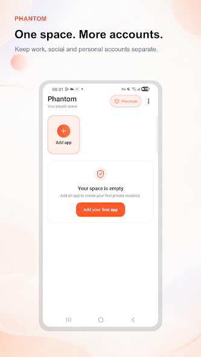
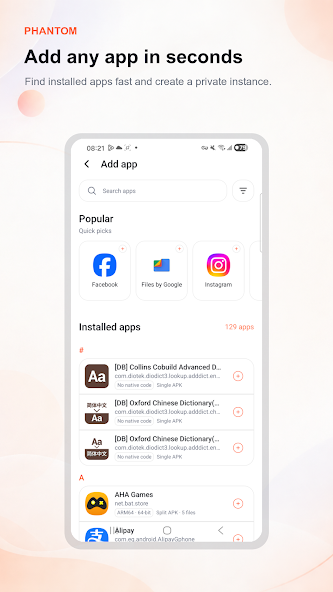

Clone installed apps
Create another instance of supported social, messaging, utility or game apps from one list.
Android app cloner & private space
Clone WhatsApp, Instagram, Telegram, games and other Android apps. Keep each account in its own space and switch without signing out.


Use a second account for
What Phantom does
Select an installed app, create a private instance and sign in with another account. The original app stays unchanged.
Create another instance of supported social, messaging, utility or game apps from one list.
Each instance uses its own app data so work and personal sign-ins do not mix.
Open the account you need from Phantom instead of repeatedly signing in and out.
Add, rename and remove cloned instances from one simple home screen.
Simple by design
See the apps already installed on your phone.
Select the app you want to use with another account.
Sign in and use it from its separate Phantom space.
Made for real life
Keep separate messaging and social accounts available on one device.
Manage multiple profiles without replacing the login in your original app.
Open another supported game account without repeatedly switching credentials.
Another app from us
SiBrowser opens WhatsApp Web in up to five isolated spaces and adds local archive, sharing, browser and offline game tools.
Available on Google Play
Install Phantom, choose an app and create your separate instance.
Download Phantom